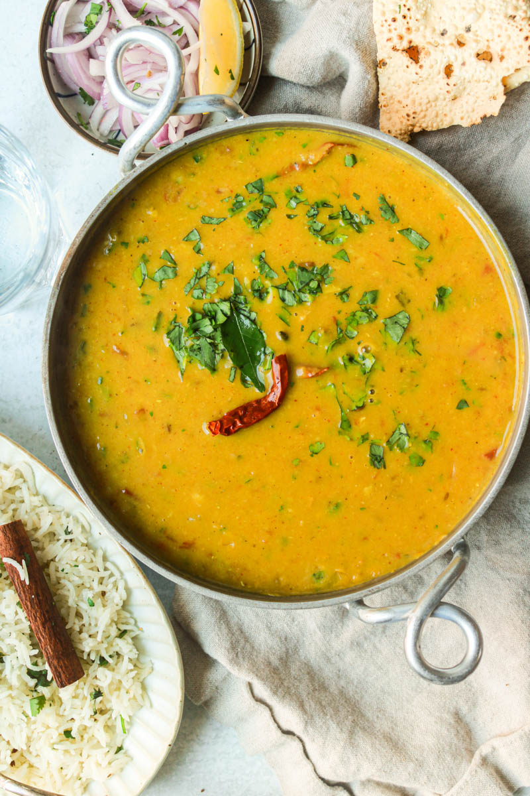

DAL FRY

In Hindi language, ‘dal’ or ‘dahl’ is the generic term for lentils as well as the recipes made from lentils. Dal or lentils are a staple in Indian cuisine and make for an excellent plant-based source of protein.
If you are new to Indian cuisine, you may think that the words ‘dal fry’ indicate that some ingredients are being deep fried or the lentils are fried. Let me assure you that we don’t fry anything in a dal fry.
Ingredients
- Toor Dal (Split Pigeon Peas)
- Water - 3 cups
- Turmeric Powder - 1/2 teaspoon
- Ghee (Clarified Butter) or Oil - 2 tablespoons
- Asafoetida (Hing) - a pinch
- Garlic - 4–5 cloves, finely chopped
- Ginger - 1-inch piece, finely chopped or grated
- Green Chilies - 2, slit or finely chopped
- Onion - 1 medium, finely chopped
- Tomato - 1 large, finely chopped
- Dry Red Chilies - 2 (optional)
- Curry Leaves - 8–10 leaves
- Turmeric Powder - 1/4 teaspoon
- Red Chili Powder - 1/2 teaspoon (adjust to taste)
- Coriander Powder - 1 teaspoon
- Garam Masala - 1/2 teaspoon
- Kasuri Methi (Dried Fenugreek Leaves) - 1 teaspoon (crushed, optional)
- Fresh Coriander Leaves - 2 tablespoons, chopped
- Lemon Juice - 1 teaspoon (optional)
- Butter - 1 teaspoon (to add on top before serving)
Steps
- Cook the Dal: Wash 1 cup of toor dal thoroughly, then pressure cook it with 3 cups of water, 1/2 teaspoon turmeric powder, and a pinch of salt for 3–4 whistles or until soft. Mash lightly and set aside.
- Prepare the Tempering: Heat 2 tablespoons of ghee (or oil) in a pan. Add 1 teaspoon mustard seeds, and let them crackle, then stir in 1 teaspoon cumin seeds and a pinch of asafoetida (hing). Add 4–5 finely chopped garlic cloves, 1-inch grated ginger, and 2 slit green chilies, sautéing until aromatic. Toss in 1 finely chopped onion, sauté until golden, then add 1 large chopped tomato and cook until soft.
- Combine and Simmer: Mix in 1/4 teaspoon turmeric powder, 1/2 teaspoon red chili powder, and 1 teaspoon coriander powder. Cook for 1–2 minutes until the oil separates. Add the cooked dal to the pan, adjust the consistency with water, and stir in 1/2 teaspoon garam masala and salt to taste. Simmer for 5–7 minutes, adding 1 teaspoon crushed kasuri methi for extra flavor if desired.
- Garnish and Serve: Turn off the heat, garnish with 2 tablespoons chopped coriander leaves and a squeeze of lemon juice. Serve hot with steamed rice, jeera rice, or naan, optionally drizzling with butter or cream for richness.